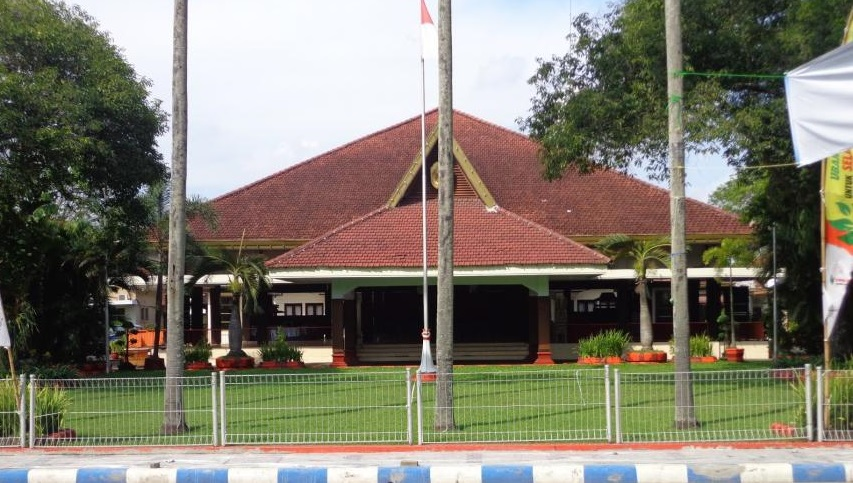
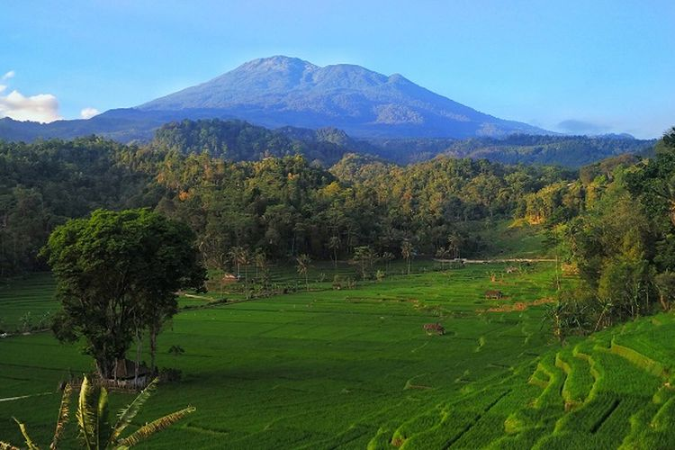
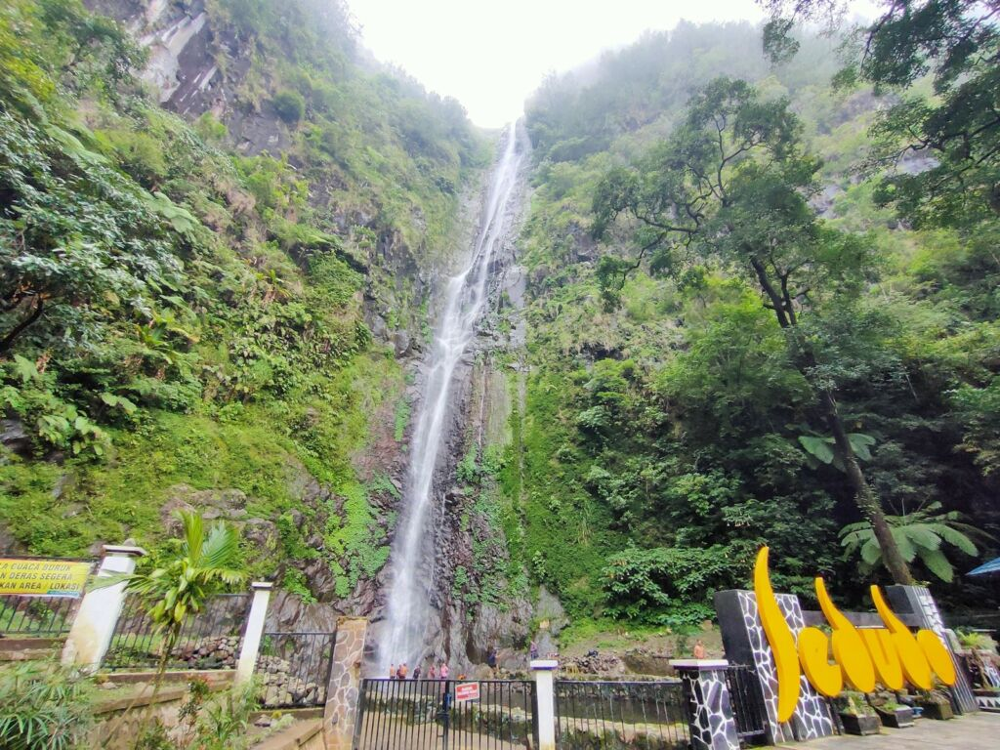
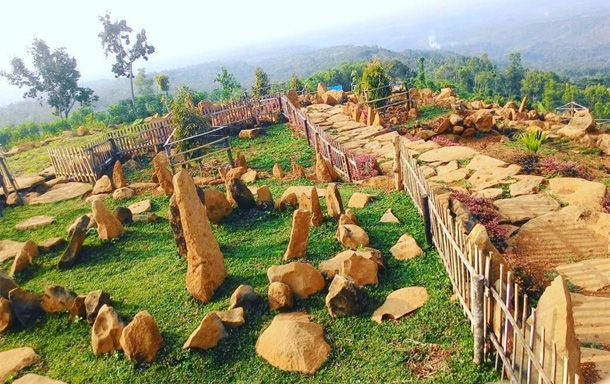

Sejarah

Nganjuk berdasarkan Prasasti Anjuk Ladang dahulunya bernama Anjuk
Ladang yang dalam bahasa Jawa Kuno berarti Tanah Kemenangan.
Dibangun pada tahun 859 Caka atau 937 Masehi.
Berdasarkan peta Jawa Tengah dan Jawa Timur pada permulaan tahun
1811 yang terdapat dalam buku tulisan Peter Carey yang berjudul:
”Orang Jawa dan masyarakat Cina (1755-1825)”, penerbit Pustaka Azet,
Jakarta, 1986; diperoleh gambaran yang agak jelas tentang daerah
Nganjuk. Apabila dicermati peta tersebut ternyata daerah Nganjuk
terbagi dalam 4 daerah yaitu Berbek, Godean, Nganjuk dan Kertosono
merupakan daerah yang dikuasai Belanda dan kasultanan Yogyakarta
kecuali Nganjuk yang merupakan mancanegara kasunanan Surakarta.
Sejak adanya Perjanjian Sepreh 1830, atau tepatnya tanggal 4 Juli
1830, maka semua kabupaten di Nganjuk (Berbek, Kertosono dan Nganjuk
) tunduk di bawah kekuasaan dan pengawasan Nederlandsch Gouverment.
Alur sejarah Kabupaten Nganjuk adalah berangkat dari keberadaan
kabupaten Berbek di bawah kepemimpinan Raden Toemenggoeng
Sosrokoesoemo 1. Di mana tahun 1880 adalah tahun suatu kejadian yang
diperingati yaitu mulainya kedudukan ibu kota Kabupaten Berbek
pindah ke Kabupaten Nganjuk.
Geografis

Kabupaten Nganjuk merupakan salah satu kabupaten di Provinsi Jawa
Timur yang terletak di bagian barat Provinsi Jawa Timur. Secara
Astronomis Kabupaten Nganjuk terletak pada koordinat 111°5' sampai
dengan 111°13' Bujur Timur dan 7°20' sampai dengan 7°50' Lintang
Selatan. Luas Kabupaten Nganjuk adalah sekitar 122.433 km2 atau
setara dengan 122.433 Ha . Dengan wilayah yang terletak di dataran
rendah dan pegunungan, Kabupaten Nganjuk memiliki kondisi dan
struktur tanah yang cukup produktif untuk berbagai jenis tanaman,
baik tanaman pangan maupun tanaman perkebunan sehingga sangat
menunjang pertumbuhan ekonomi dibidang pertanian. Kondisi dan
struktur tanah yang produktif ini sekaligus ditunjang adanya sungai
Widas yang mengalir sepanjang 69,332 km dan mengairi daerah seluas
3.236 Ha, dan sungai Brantas yang mampu mengairi sawah seluas 12.705
Ha.
Secara geografis Kabupaten Nganjuk memiliki batas-batas: sebelah
utara berbatasan dengan Kabupaten Bojonegoro, sebelah selatan
Kabupaten Kediri dan Trenggalek. Pada wilayah bagian timur dan barat
berbatasan dengan Kabupaten Jombangdan Kediri, serta Kabupaten
Ponorogodan Madiun. Dengan wilayah yang luasnya 122.433,1 Ha,
Kabupaten Nganjuk terbagi menjadi 20 kecamatandan 284
desa/kelurahan. Sebagian besar kecamatan berada pada dataran rendah
dengan ketinggian antara 46 sampai dengan 95 meter di atas permukaan
laut. Sedangkan 4 (empat) kecamatan yang berada pada daerah
pegunungan terletak pada ketinggian 150 sampai dengan 750 meter di
atas permukaan laut. Daerah tertinggi yaitu desa Ngliman di
Kecamatan Sawahan.
Wisata
Dengan julukan kota angin, banyak wilayah yang ada di Nganjuk
memiliki tempat untuk wisata yang berhubungan dengan air. Tempat
wisata yang tidak hanya indah, namun memiliki keunikan
tersendiri membawa banyak pengunjung yang ingin datang dan berlibur
ke tempat ini.
Air Terjun Sedudo

Terletak di Desa Ngliman Kecamatan Sawahan. Air Terjun Sedudo
menjadi objek wisata yang selalu ramai pengunjung, banyak
masyarakat setempat yang mempercayai bahwa Air Tejun ini dapat
membuat orang yang membersihkan diri atau mandi disini menjadi
awet muda.
Bukit Batu Songgong

Bukit Batu Songgong menawarkan pemandangan bukit yang eksotis. Ada
susunan bebatuan yang tertata rapi dan terlihat begitu asri dan
unik. Dengan wilayah lokasi yang berada di lereng gunung
menyuguhkan pemandangan yang indah dan mempesona. Wilayah ini juga
menjadi spot foto yang keren dan memorable